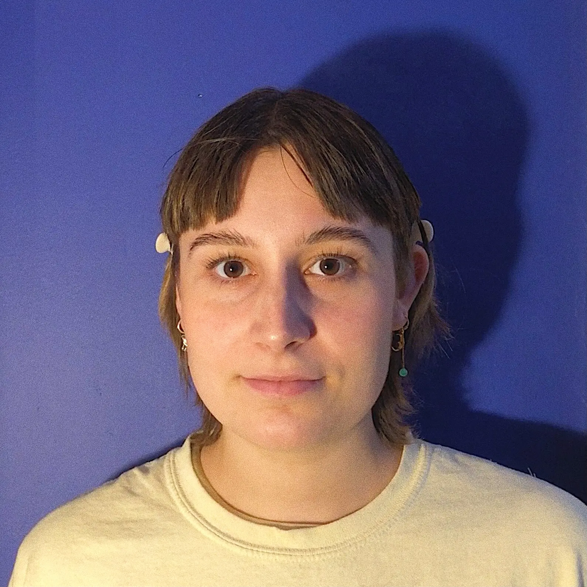
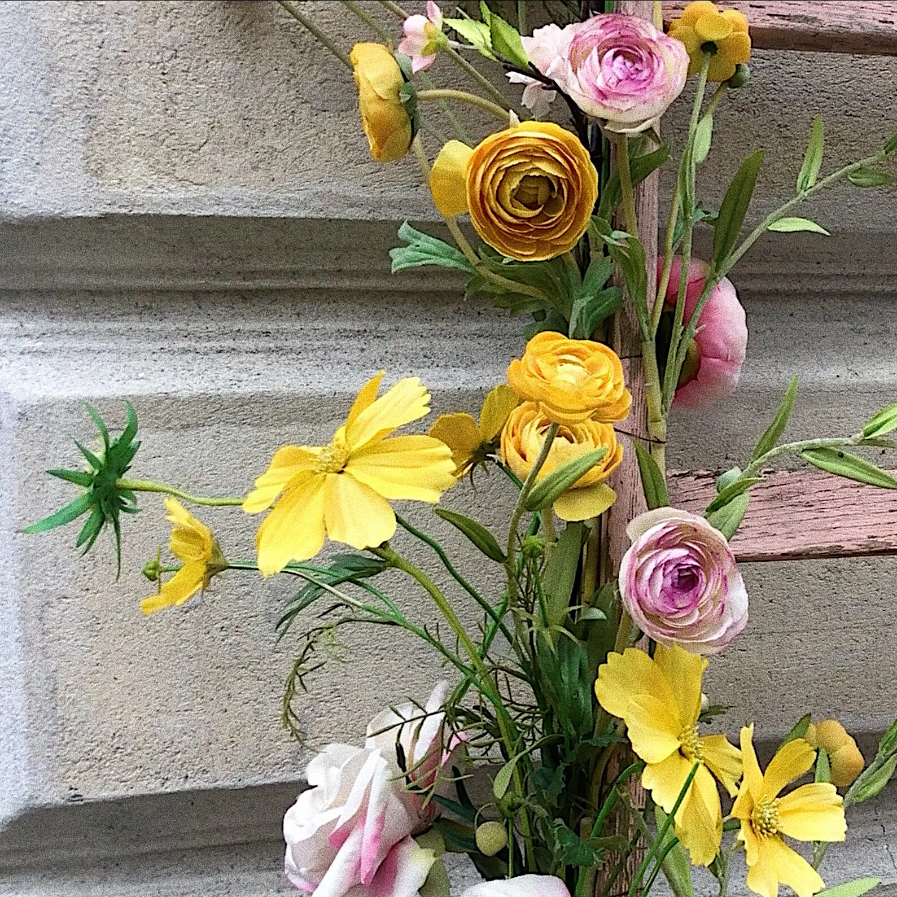
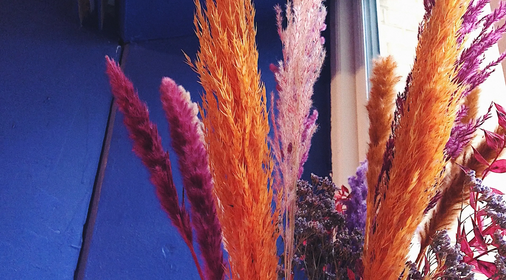
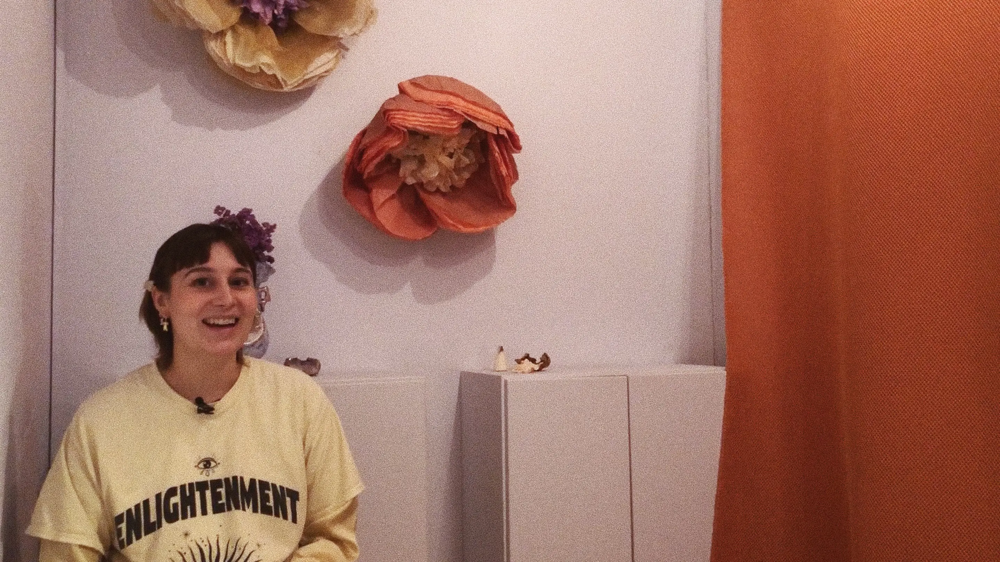

linjer i dit ansigt
"Ansigtslæsning er en form for sjælelig terapi, der gør at du føler dig set som menneske" - Maria Vallentin
GALLERI
Mød Maria Vallentin der arbejder som ansigtslæser. Vi møder hende i hendes rum på Tullinsgade på Vesterbro, hvor hun fortæller om ansigtlæsning og hvordan hendes passion opstod. Billeder og Video af Filippa de Neergaard og Charlotte Franciska.



